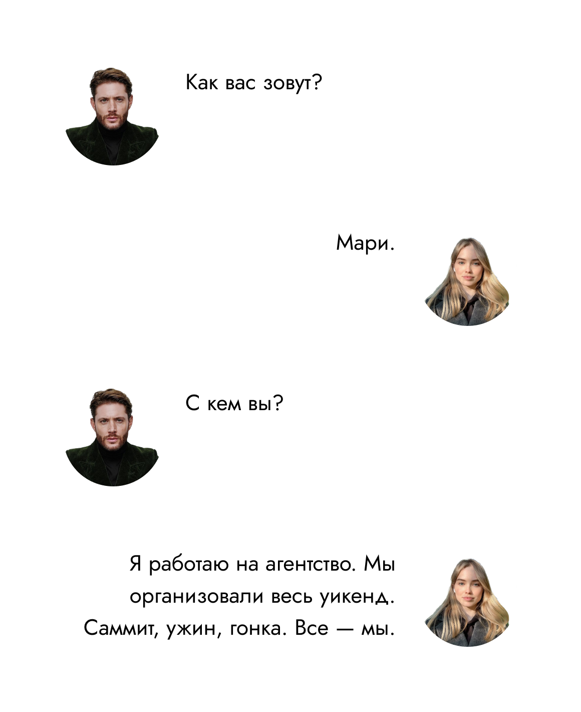

Слишком быстро летит время. Вроде ты прилетела совсем недавно, в первый раз увидела Монте-Карло, а вот ты уже танцуешь с Шарлем, улыбаешься ему через весь огромный стол на групповом фото и ловишь самый загадочный взгляд Ландо… Ландо Норриса! На себе. Как жаль, что в жизни он оказался совсем не таким, как ты думала.
Гонка организована на высшем уровне. Часть процессов — твоя заслуга. Чувство гордости собой тебя переполняет, ты хочешь петь, танцевать, как вчера с Шарлем… А он не сбавляет темп. Его боллид пролетает мимо твоей трибуны, вслед за ним пролетают оба макларена. Ты как-то легкомысленно машешь им вслед.
Мысли о Ландо не покидают тебя. Тебе обидно, но ты не можешь забыть тот взгляд, что ты поймала вчера на себе во время ужина. Что же он мог значить? Зачем ухмылялся, хмурился, зачем вообще пристально смотрел, до этого всем видом показывая, что ему все равно.
Ты спускаешься в паддок. Гоночные фотографы протирают линзы, пьют крепкий кофе, болтают. Может попросить кого-то из них ходить с тобой, фотографировать пилотов Феррари и Макларен? Какой-то фотограф услышал твои мысли, обернулся к тебе.
Ты хохочешь и киваешь.
Он восхищен.
Улыбочку. Да. Для вас ничего не жалко 😁